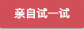

段落是通过<p>标签定义的.
This is a paragraph
This is another paragraph

注释: 浏览器会自动地在段落的前后添加空行。（<p> 是块级元素）
提示: 使用空的段落标记 <p></p> 去插入一个空行是个坏习惯。用 <br /> 标签代替它！（但是不要用 <br /> 标签去创建列表。不要着急，您将在稍后的篇幅学习到 HTML 列表。
即使忘了使用结束标签，大多数浏览器也会正确地将 HTML 显示出来：
上面的例子在大多数浏览器中都没问题，但不要依赖这种做法。忘记使用结束标签会产生意想不到的结果和错误。
注释: 在未来的 HTML 版本中，不允许省略结束标签。
提示: 通过结束标签来关闭 HTML 是一种经得起未来考验的 HTML 编写方法。清楚地标记某个元素在何处开始，并在何处结束，不论对您还是对浏览器来说，都会使代码更容易理解。
如果您希望在不产生一个新段落的情况下进行换行（新行），请使用 <br /> 标签：
您也许发现 <br> 与 <br /> 很相似。
在 XHTML、XML 以及未来的 HTML 版本中，不允许使用没有结束标签（闭合标签）的 HTML 元素。
即使 <br> 在所有浏览器中的显示都没有问题，使用 <br /> 也是更长远的保障。
我们无法确定 HTML 被显示的确切效果。屏幕的大小，以及对窗口的调整都可能导致不同的结果。
对于 HTML，您无法通过在 HTML 代码中添加额外的空格或换行来改变输出的效果。
当显示页面时，浏览器会移除源代码中多余的空格和空行。所有连续的空格或空行都会被算作一个空格。需要注意的是，HTML 代码中的所有连续的空行（换行）也被显示为一个空格。
（这个例子演示了一些 HTML 格式化方面的问题）
HTML 段落
如何在浏览器中显示 HTML 段落。
换行
在 HTML 文档中使用换行。
在 HTML 代码中的排版一首唐诗
浏览器在显示 HTML 时，会省略源代码中多余的空白字符（空格或回车等）。
更多段落
段落的默认行为。